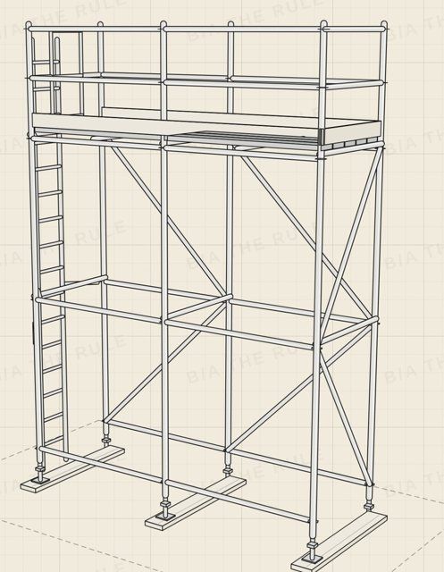
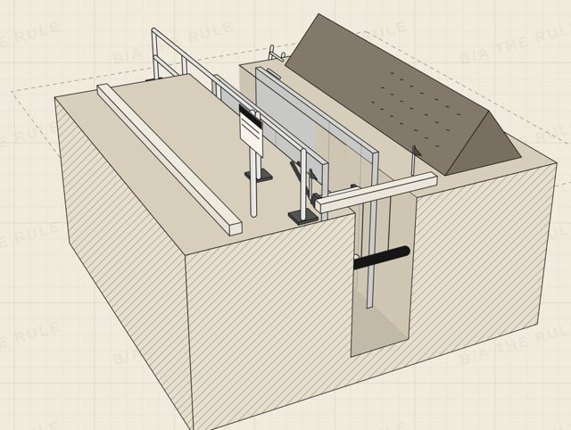

Take each system apart, see what every piece does, and when to use it.

System, tube and coupler, frame, stair tower, mobile tower, birdcage, cantilever, suspended and trestle.

Sloping, benching, timber shoring, hydraulic shoring, trench box and slide rail.